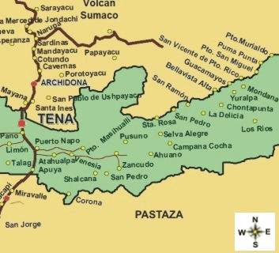

La ciudad de Tena, capital de la provincia de Napo, se sitúa en una de las regiones más biodiversas y estratégicas de Ecuador: la Amazonía. Esta introducción te guiará por tres aspectos fundamentales de su ubicación geográfica: primero, exploraremos su posición dentro del territorio nacional y su conectividad con otras regiones; luego, analizaremos las características físicas y climáticas que definen su entorno natural; finalmente, abordaremos el papel que juega esta ubicación en la dinámica económica, cultural y ecológica de la ciudad.
| Ubicación geográfica y características de Tena - Provincia de Napo | |
|---|---|
| Superficie cuadrada | 1,234 km² |
| Altitud | Una altitud promedio de 510 metros sobre el nivel del mar. |
| Posición geográfica | Tena se ubica en la región amazónica del Ecuador. Es la capital de la provincia de Napo. |
| Conecciones viales | Cuenta con conexiones viales que la enlazan con la Sierra y otras zonas de la Amazonía. Su localización permite el acceso tanto desde Quito como desde otras ciudades importantes. |
| Características físicas | La ciudad está rodeada de selva tropical húmeda, ríos caudalosos y colinas. |
| Características climáticas | Su clima es cálido y húmedo durante casi todo el año, con abundantes lluvias que favorecen la biodiversidad y los ecosistemas naturales. |
| Población de Tena - Napo | |
|---|---|
| Población | 29 724 habitantes segun el censo de 2022 | Mujeres y Hombres |
No se han publicado datos sobre la cantidad de habitantes mujeres y habitantes hombres en la ciudad de Tena |